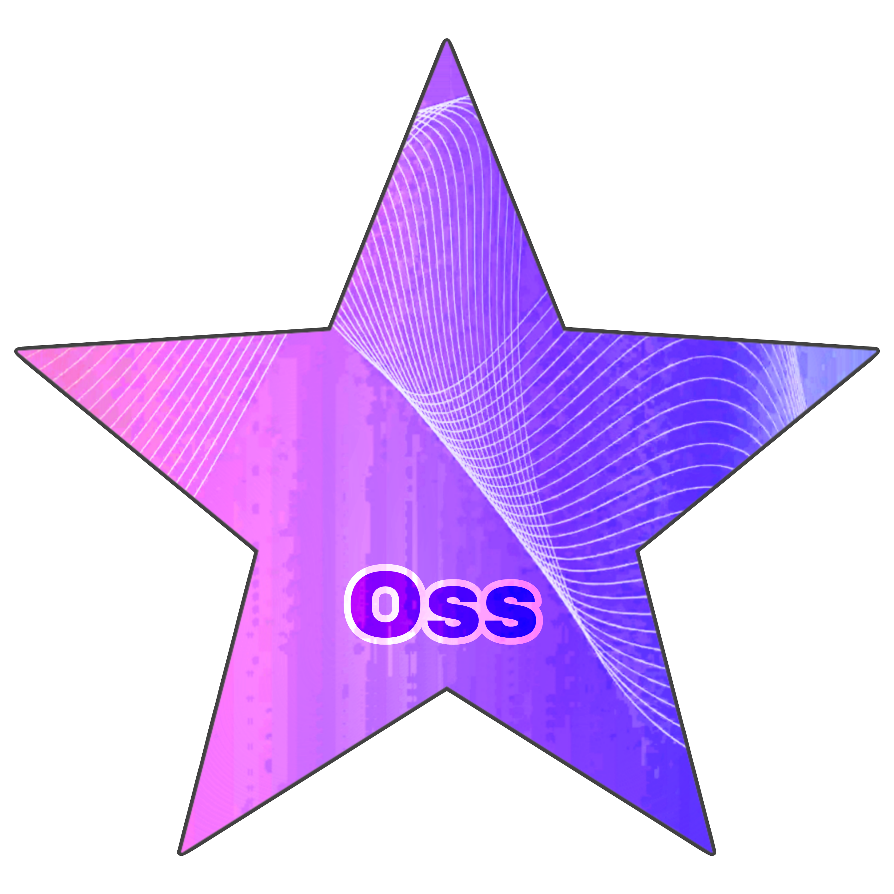

Artificial intelligence is reshaping the future of technology, innovation, and human interaction.
AI:
Artificial Intelligence (AI) refers to the development of computer systems capable of performing tasks that typically require human intelligence, such as decision-making, speech recognition, and visual perception. AI is transforming industries, automating processes, and enabling machines to think and act like humans.
Historically, the concept of AI dates back to the 1950s, when researchers began developing computer systems that could perform simple tasks. In the 1970s and 1980s, the first practical applications of AI emerged, such as control systems for factories and expert systems.
In the 1990s, new technologies emerged in the field of AI, such as machine learning and neural networks. These technologies enabled the development of more complex systems that could perform tasks more accurately.
Today, AI is an integral part of our daily lives, and we use it in applications such as voice assistants, facial recognition, and self-driving cars.
Textual Models of AI (GPT) :
Textual AI models, such as GPT, analyze vast amounts of data to generate meaningful text outputs. These models power chatbots, content generation tools, and assistive technologies, making communication more seamless and intuitive.
Historically, the concept of textual AI models dates back to the early 21st century, when researchers began developing computer systems that could analyze text data. In 2015, the first GPT models were developed, which were capable of generating meaningful text.
Today, GPT models are used in applications such as conversations, content generation, and assistive technologies. These models enable machines to perform tasks more accurately and quickly, making communication more seamless and intuitive.
A Comprehensive Guide to AI Programming :
Artificial intelligence is one of the most advanced fields in the world of technology, contributing to the development of innovative applications and smart solutions to complex problems. In this article, we will review a comprehensive guide to artificial intelligence programming, starting from the basic components to the most important languages and tools used in this exciting field.
1. Basic Components of Artificial Intelligence Programming:
- Mathematical Models: such as artificial neural networks and deep learning.
- Big Data: for analyzing and training smart models.
- Intelligent Algorithms: such as machine learning and deep learning algorithms.
2. Common Programming Languages in Artificial Intelligence:
- Python: for ease of use, learning, and availability of advanced libraries such as TensorFlow and PyTorch.
- R: for data analysis and statistics in the field of artificial intelligence.
- Java: for developing interactive artificial intelligence applications.
3. Tools and Libraries:
- TensorFlow: an open-source library for building machine learning models.
- PyTorch: a library for developing deep learning models in an easy and efficient way.
- Scikit-learn: a library for applying machine learning algorithms to data.
4. Practical Applications of Artificial Intelligence Programming:
- Machine Learning: for developing predictive and classification models.
- Natural Language Processing (NLP): for understanding and analyzing human language.
- Computer Vision: for analyzing and understanding images and videos.
Conclusion:
Artificial intelligence programming is an exciting and evolving field that provides innovative solutions to modern problems. Programmers must continue to learn and develop their skills in this vital field to keep pace with developments and innovations.

Oss GPT
Oss GPT is a cutting-edge conversational AI program tailored for dynamic interactions. It evolves through learning, adapts to user preferences, and facilitates advanced dialogues, making it a pivotal tool for modern AI solutions.
README -> Oss GPT v.3 project :
#Oss GPT v.3 is a bot program similar to artificial intelligence. While most of its commands are in English, its data is in Arabic. It is capable of evolving and responding based on its database rules. It can calculate, understand, extract meanings, and assist you through the command `?help`. If asked or input a word it doesn't know, it will ask you to teach it, thus growing and learning through user interaction. It can display its data using the command `data`, delete it entirely or partially, and can be taught synonyms and antonyms as well. With future development, it will be able to accomplish many functions.
This project is part of the Artificial Intelligence department at Fluxa AI under B.Y PRO Software Company.
Note: The main file is main.py. Run it first and interact with the project
Chat DIM
Chat DIM is a funny and intentionally dumb chatbot designed for entertainment. It provides silly and illogical responses in a lighthearted way, offering users a fun and engaging experience. The bot adapts to specific keywords to generate semi-smart reactions while keeping the humor at its core.
README -> Chat DIM v.1 project:
# Chat DIM v.1 is a lightweight chatbot designed with humorous and intentionally silly logic.
The program supports Arabic and English, offering dynamic and funny interactions based on user input.
With a simple design and amusing responses, Chat DIM ensures every conversation is a unique and playful experience.
This project was developed under the Artificial Intelligence department at **Fluxa AI**, a division of **B.Y PRO Software Company**.
Download the project:
Project Files:
Chat DIM v.1/
│
├── README.md
└── chat_MID.py
Note: The main file is main.py. Run it first and interact with the project.


 B.Y PRO official website
B.Y PRO official website